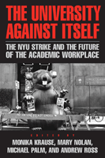

<body bgcolor="#FFFFFF" text="#000000" link="#0000FF" vlink="#CC0000" alink="#CC0000"><center><hr width="350" size="1" align="center" noshade>Looking at the impact of one historic student union strike, this book offers many lessons about the future of workplaces in higher education<hr width="350" size="1" align="center" noshade><p><a href="https://cdcshoppingcart.uchicago.edu/Cart/ChicagoBook.aspx?ISBN=9781592137404&&PRESS=temple" target="_top">Buy this book!</a> | <a href="https://cdcshoppingcart.uchicago.edu/Cart/Cart.aspx?PRESS=temple" target="_top">View Cart</a> | <a href="https://cdcshoppingcart.uchicago.edu/Cart/Cart.aspx?PRESS=temple" target="_top">Check Out</a></p><p></p></center><!--none//--><h1>The University Against Itself</h1>
<H2>The NYU Strike and the Future of the Academic Workplace</H2>
<h3>edited by Monika Krause, Mary Nolan, Michael Palm and Andrew Ross</h3>
<P>cloth 1592137407 $80.50, Feb 08, <FONT COLOR=#990033>Available</FONT>
<br>paper 1592137415 $30.95, Feb 08, <FONT COLOR=#990033>Available</FONT>
<br>Electronic Book 1592137423 $30.95 <FONT COLOR=#990033>Available</FONT>
<BR> 280 pp
6x9
3&nbsp;tables 4&nbsp;figures 14&nbsp;halftones
</P><BLOCKQUOTE><I>"A terrific book on an important topic,</i>The University Against Itself <i>offers a rich mixture of on-the-ground activist immediacy and the deep insights of scholars in multiple disciplines who have studied these developments for years. The authors place what looks like a small story into a national, even global context of aggressive neoliberal capitalism, showing the connections between NYU's story and the largest of disturbing trends.</i>"<br>&#151<b>Dana Frank</b>, University of California, Santa Cruz</I></BLOCKQUOTE>
<p>During the last two decades, many U.S. universities have restructured
themselves to operate more like corporations. Nowhere has this process
been more dramatic than at New York University, often touted as an
exemplar of the "corporate university." Over the same period, an
academic labor movement has arisen in response to this restructuring.
Using the unprecedented 2005 strike by the graduate student union at
NYU as a springboard, <I>The University Against Itself</I> provides a brief history of labor organizing on American campuses, analyzes the state
of academic labor today, and speculates about how the university
workplace may evolve for employees.
<p>
All of the contributors were either participants in the NYU strike-graduate students, faculty, and organizers-or are nationally-recognized writers on academic labor. They are deeply troubled by the ramifications of corporatizing universities. Here they spell out their concerns, offering lessons from one historic strike as well as cautions about the future of all universities.
<p>
Contributors include: Stanley Aronowitz, Barbara Bowen, Miabi Chatterji, Maggie Clinton, Andrew Cornell, Ashley Dawson, Stephen Duncombe, Steve Fletcher, Greg Grandin, Adam Green, Kitty Krupat, Gordon Lafer, Natasha Lightfoot, Micki McGee, Sarah Nash, Cary Nelson, Matthew Osypowski, Ed Ott, Ellen Schrecker, Naomi Schiller, Sherene Seikaly, Susan Valentine, and the editors.
<BR>&nbsp;<h2>Excerpt</h2><P>Excerpt available at <a href="http://www.temple.edu/tempress">www.temple.edu/tempress</a></p>
<BR>&nbsp;<h2>Reviews</h2>
<p><i>"The NYU strike was no mere labor dispute. It made history in the strong and truly exceptional sense; it was the decisive strike of the first graduate employee union at a private university in the U.S. Each detail of the strike and how it was dealt with resounds around the country and (literally) around the world.</i> The University Against Itself <i>is very insightful, very readable, and a book that must be read."</i><br>&#151<b>Bruce Robbins</b>, Columbia University
<p><i>"</i>The University Against Itself<i> is an indispensable collection. Not just a strike dossier (though it is that too), this book offers a compelling, comprehensive look at the new corporate university and its discontents. Anyone who wants to promote a more humane agenda for American labor and education should start by reading this book"</i> <br>&#151<b>Michael B�rub�</b>, Penn State University
<P><I>"</i>The University Against Itself<i> is strongest when it provides a behind-the-scenes look at what went down during the strike. In that sense, the book reads like a rebuttal to the flawed and often pro-administration mainstream news reporting on the action."</i><br><b>&#151<i> In These Times</i></b>
<p><I>"It studies NYU specifically and universities in general, offering a solid reassessment of corporate growth in higher education, while exploring how to fight for better universities through collective action. Blessedly free of jargon and unforgiving in its critique, this book speaks powerfully to any faculty member interested in retaining academic freedom, shared governance, dignity on the job, or just the job itself[...] thought-provoking." </I>
<br>&#151<b><I>Academe</I></b>
<p><i>"Although these are not the first labor or social movement examinations to generate predictive analyses, existing literatures remain relatively sparse, and therefore, these pieces constitute a welcome addition to a growing body of work, particularly in terms of expanding research in the areas of movement repertoire and tactical innovation. In sum, I highly recommend this thoughtfully organized and well-written volume for the relevant conversations it includes as well as the ones it will inspire for people interested in the labor movement and/or higher education." </i> <br>&#151<b><i>Contemporary Sociology</i></b>
<BR>&nbsp;<h2>Contents</h2><P>
<br>Introduction
<P>Part I: Corporate University?
<P>1. New York: Academic Labor Town?
<br>2. Academic Freedon in the Age of Casualization
<br>3. A Leadership University for the Twenty-First Century? Corporate Administration, Contingent Labor, and the Erosion of Faculty Rights
<br>4. Building a Statue of Smoke: Finance Culture and the NYU Trustees
<br>5. ICE from the Ashes of FIRE: NYU and the Economy of Culture in New York City
<br>6. The High Cost of Learning: Tuition, Educational Aid, and the New Economics of Presitge in Higher Education
<br>7. Blue Team, Gray Team: Some Varieties of the Contingent Faculty Experience
<P>Part II: GSOC Strike
<P>8. Unions at NYU, 1971-2007
<br>9. The Administration Strikes Back: Union Busting at NYU
<br>10. Bad News for Academic Labor? Lessons in Media Stategy from the GSOC Strike
<BR>11. If Not Now, When? THE GSOC Strike, 2005-2006
<BR>12. Which Side Are We On? NYU's Full-Time Faculty and the GSOC Strike
<BR>13. Undergraduate Participation in Campus Labor Coalitions: Lessons from the NYU Strike
<br>14. Village Hospitality
<P>PART III: Lessons for the Future
<P>15. The State of the Academic Labor Movement: A Roundtable with Stanley Aronowitz, Barbara Bowen, and Ed Ott
<br>16. Global U
<br>17. Activists and Organizers! How to Work with Your Colleagues and Build Power in Graduate School
<br>18. Sorely Needed: A Corporate Campaign for the Corporate University
<br>19. Graduate-Employee Unionization and the Future of Academic Labor
<BR>Contributors
<BR>Index
</P><BR>&nbsp;<H2>About the Author(s)</H2>
<P><b>Monika Krause</b> is a Ph.D. Candidate in Sociology at New York University.</P>
<P><b>Mary Nolan</b> is Professor of History at New York University.</P>
<P><b>Michael Palm</b> is completing his PhD in the American Studies program at New York University.</P>
<P><b>Andrew Ross</b> is Professor and Chair of the Department of Social and Cultural Analysis at New York University and author of <i>Fast Boat to China</i>, <i>Low Pay</i>, <I>High Profile</i>, and <i><a href="1785_reg.html" target=_blank>No-Collar</a></i>.</P>
<BR><H2>Subject Categories</H2>
<p><A HREF="/tempress/labor.html" TARGET="_top">Labor Studies and Work</a>
<BR><A HREF="/tempress/education.html" TARGET="_top">Education</a>
<BR><A HREF="/tempress/sociology.html" TARGET="_top">Sociology</a>
</p>
<p align="center"><a href="https://cdcshoppingcart.uchicago.edu/Cart/ChicagoBook.aspx?ISBN=9781592137404&&PRESS=temple" target="_top">Buy this book!</a> | <a href="https://cdcshoppingcart.uchicago.edu/Cart/Cart.aspx?PRESS=temple" target="_top">View Cart</a> | <a href="https://cdcshoppingcart.uchicago.edu/Cart/Cart.aspx?PRESS=temple" target="_top">Check Out</a></p><p><font face="Arial" size="1"><a href="copyright.html" onMouseOver="window.status='Web Copyright Policy';return true;" onMouseOut="window.status=''" title="Web Copyright Policy">&copy;</a> 2015 <a href="http://www.temple.edu" target="new" onMouseOver="window.status='Link to Temple University home page';return true;" onMouseOut="window.status=''" title="Link to Temple University home page">Temple University</a>. All Rights Reserved. http://www.temple.edu/tempress/titles/1956_reg.html</font></p>